A step-by-step guide to laying out the robot, table, carton and cameras so the simulation-trained policy sees what it was trained on, then to running it safely for the first time.
robot_stop) whenever a motor is enabled.farm/safety/rules.py to make it work.img/fold-policy-setup/fold-pose-tags-40-43.pdfimg/fold-policy-setup/fold-box-tags.pdf, plus scissors, a ruler and glue stick| Item | Target |
|---|---|
| Pan axis to pan axis (centre to centre) | 220 mm (robot model) |
| Bottom of the arm bases above the table top | 120 mm |
| Base line → table edge | 150 mm |
| Carton near wall → table edge | 10 mm |
| Carton sideways | 10 mm left of centre (−25 … +5) |
| Carton rotation | square, within ±4° |
| Head camera | pan 0°, tilt 58° down |
The policy only works near these numbers. If something can't be matched, measure it and send it: the simulation gets rebuilt to match (step 7).
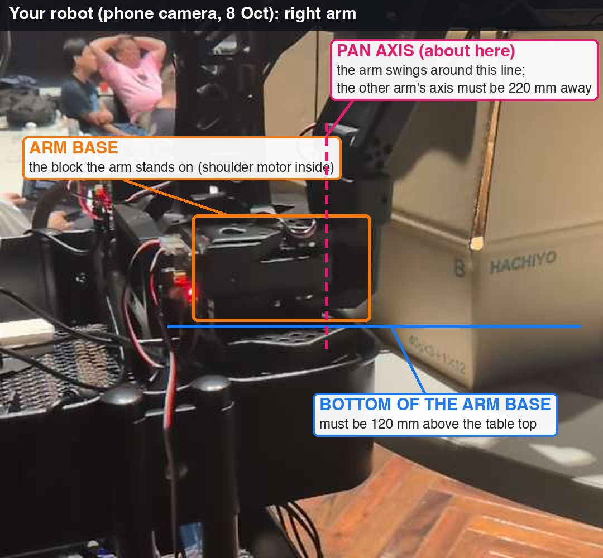
Animation: the XLeRobot model's cart, mast and head with the two SO-101 arms, table and carton exactly as the policy trained. Photo: your robot on 8 October. The pan-axis line in the photo is approximate.
Each arm swings around its own vertical pan axis. Measure centre to centre.
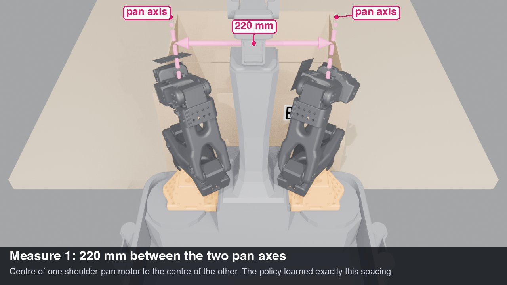
The policy was trained with the arm-base origins 220 mm apart, as in the robot model. The model turns its bases sideways, which would put the pan axes about 310 mm apart instead.
Whatever you measure, send it. If it isn't 220 mm, new demonstrations get recorded at your number before training: a few hours of compute, not days.
The blue plane is the bottom of both arm bases; the carton stands on the table top.
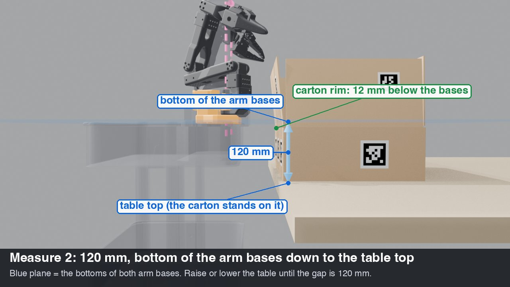
Measure the floor → underside of each arm base and subtract 70 cm. You want 12 cm, i.e. bases at about 82 cm off the floor.
docs/carton.md says): the 70 cm table is right as it is.Then the agent checks it: python tools/check_station.py --pilot-root "$PILOT" reads one head-camera frame and answers in plain words, e.g. "Lower the table 7 mm", "Move the carton 8 mm to the robot's left", or "OK".
111 mm from each pan axis to the table edge on both sides; tape the carton footprint.
Then the agent checks it: python tools/check_station.py --pilot-root "$PILOT" reads one head-camera frame and answers in plain words, e.g. "Lower the table 7 mm", "Move the carton 8 mm to the robot's left", or "OK".
Flaps straight up, short flaps facing the arms, near wall 10 mm from the table edge.
The simulation assumed a crease stiffness and friction, and trained across a range of them. Pre-folded, softer cartons can sag past flat. If you can, measure the crease with a luggage scale and send the reading.
Then the agent checks it: python tools/check_station.py --pilot-root "$PILOT" reads one head-camera frame and answers in plain words, e.g. "Lower the table 7 mm", "Move the carton 8 mm to the robot's left", or "OK".
Near wall, end walls, inside floor, then the four flaps. Exact spots on the next slides.
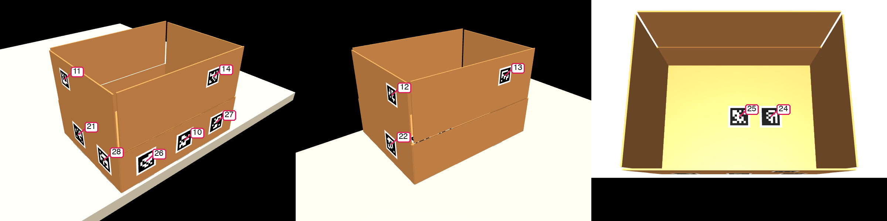
img/fold-policy-setup/fold-box-tags.pdf (2 pages) at 100% / actual size, never "fit to page".The simulated carton the policy learned on carries these 12 tags. On 4 unseen starts, the same policy folded 4/4 with the tags and 2/4 without them. Without tags, one run pushed the left flap outward and slid the carton 107 mm. Put them exactly where the next slides show.
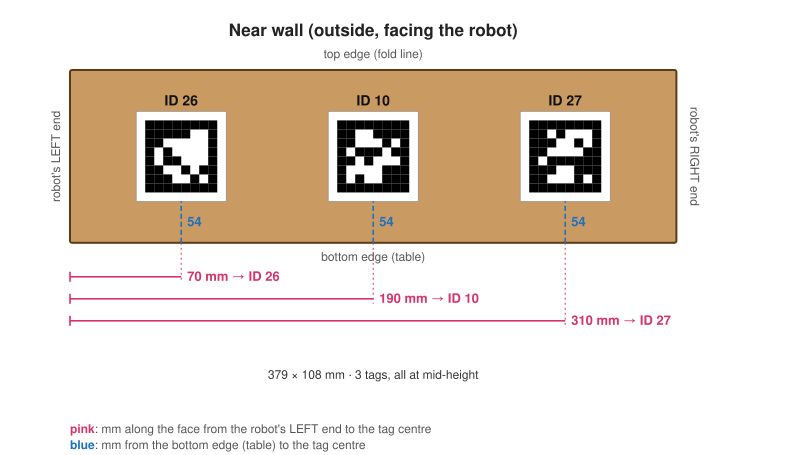
All distances go to the edge of the black square, not the white paper (its border depends on how you cut). The squares are 45 mm, so their left edges are 120 mm apart.
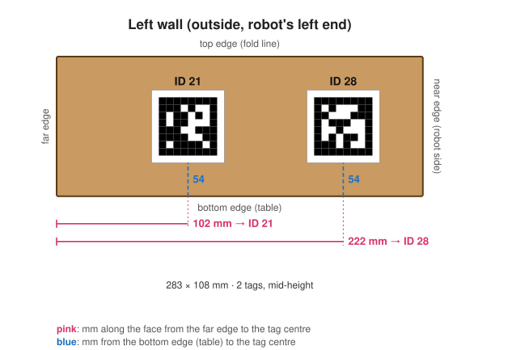
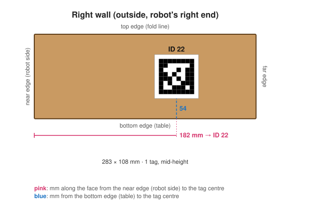
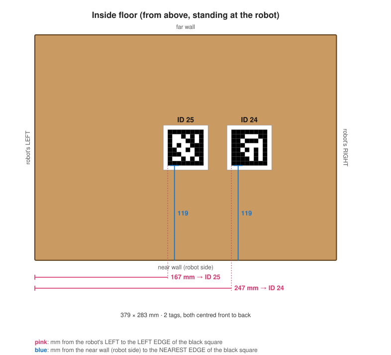
The head camera looks into the box, and these are what it sees between the flaps.
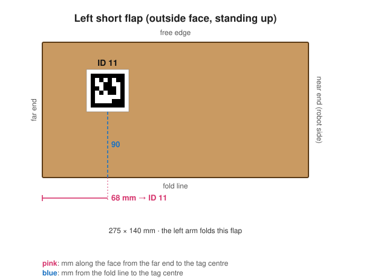
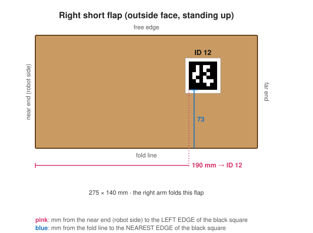
After the fold these tags face up, so they show the camera how far each flap has turned.
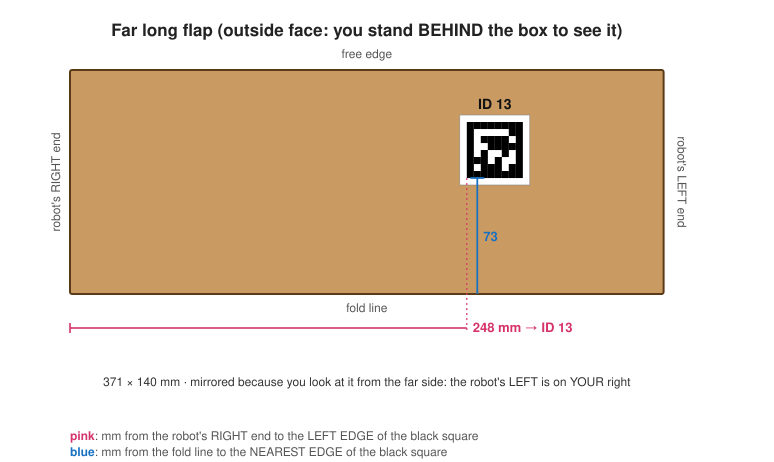
The orange cone is what the head camera sees: all four flaps and both claws.
--print-arm-pose) so both gripper tags face the head.python tools/auto_head_pose.py --pilot-root "$PILOT" --execute --operator <you> --out head-pose.jsonhead-pose.json: the camera's measured position and angle, the head ticks and the lens numbers (read from the OAK itself).Your head can only tilt about 36° down (servo range ends at 2625 ticks; level is 2211). The policy trained at 58°. The tool stops at the limit and records the real angle; step 7 then re-films the training at that angle. Nothing is forced past the limit.
They ride on the grippers, so there is nothing to point. Their lenses are measured in step 6.
The pose comes from the gripper tags; the lens numbers come from the OAK's own factory calibration.
Optional cross-check with the box tags once the carton is back: --box-tags.
python tools/capture_wrist_calibration.py --pilot-root "$PILOT" --arm left --execute --operator <you>The floor tags (40–43) and the checkerboard are only fallbacks now: fold-pose-tags-40-43.pdf, fold-checkerboard-9x6-25mm.pdf.
head-pose.json, the wrist lens files and the station check, re-films the demonstrations from your real cameras, builds the dataset, trains on the cloud GPU, evaluates on held-out starts and picks the best checkpoint by score.
python tools/refit_fold_policy.py --manifest measurements.json # plan only
python tools/refit_fold_policy.py --manifest measurements.json --launch # spends ~$2.40--launch (the only step that costs money).If the station itself differs (arm spacing, table height or setback can't be matched), the tool says so and stops; with approval it records new demonstrations at your layout first.
The maps are in profiles/fold-joint-maps/. They use the digital twin's mapping: each arm joint's zero is the
middle of its saved range (tick 2047 for every arm joint today), sign +1. The jaw is closed at the bottom of its range.
You accepted this on 8 October; the files say "accepted, not measured".
On the robot Mac, tie them to the live calibration file:
cd software
python tools/bind_fold_joint_maps.py \
--calibration <live saved calibration .json> --out bound-maps/It refuses if any arm motor's homing offset or range changed since 8 October, meaning the arms were recalibrated. Then the maps get regenerated from a fresh read.
The twin's head angles were off by about 15° tilt and 17° pan in the live check. Don't use them. The head camera pose comes from the tags in step 6.
Torque off, arms supported. Shoulders low, wrists up, jaws closed, right wrist rolled.
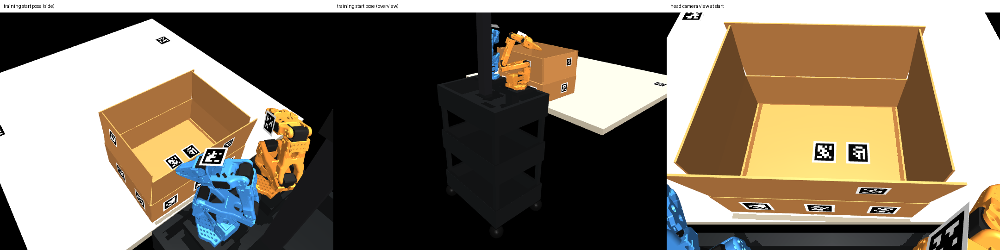
python tools/move_to_start_pose.py --pilot-root "$PILOT" # plan only
python tools/move_to_start_pose.py --pilot-root "$PILOT" --execute --operator <you>robot_fold_policy_start_pose.Start the fold within 2 minutes: the owner releases idle arms after 120 s.
Skippable: you accepted the maps. If a run ever looks off, this gives the evidence. Do it after step 6, sleeves off:
Arms in sleeves, head pose unknown: after fitting a head offset, the twin arms covered the real arms roughly (overlap 0.52). It's plausible, but too coarse to prove a few degrees per joint.
| # | Step | Who |
|---|---|---|
| 1 | On the chat Mac, measure the link (read-only, nothing moves): tools/measure_robot_link.py --pilot-root "$PILOT". Send the output. The policy needs 4 calls inside 0.1 s. | Owner |
| 2 | If the link is too slow, the runner moves onto the robot Mac (--transport direct-client), so there's no network hop. | Agent |
| 3 | I read the robot server's servo speed setting from the code and work out the real joint speed limit. If it's near 9°/s, I slow the demonstrations to match and retrain, or propose a speed change for you to approve. | Agent |
| 4 | I write the server change that lets the jaw close during streamed motion (today it's refused, and the policy needs it). You review it and deploy it with the restart script. | Agent → owner |
| 5 | Supervised jaw test in free air, STOP in hand: open, close on nothing, open. Record it in STATUS.md. | Owner |
Arms released, supported at the training start pose (8b), no carton. No --execute, so no command reaches the motors.
python -m carton.fold_policy_runner --checkpoint <ckpt> \
--transport api --pilot-root "$PILOT" \
--joint-map left=bound-maps/left-joint-map.json --joint-map right=bound-maps/right-joint-map.json \
--camera front=<head OAK> --camera left_wrist=<cam> --camera right_wrist=<cam> \
--out <run dir> --max-steps 100The learned policy in simulation (2× speed). The real carton comes last, after free-air runs.
--execute --operator <your name> --max-steps 10.robot_stop.Raise --max-steps only after reading ticks.jsonl from the last run: clamps, warnings, timing.
Only after every gap in step 8 is closed and the policy was refitted for your measurements. Start with enough steps for one short flap, STOP in hand, then both flaps.
Write what happened in software/STATUS.md, with the run directory.
auto_head_pose.py)capture_wrist_calibration.py)check_station.py)refit_fold_policy.py --launch)move_to_start_pose.py)Details: docs/carton-fold-policy.md (results),
docs/carton-fold-policy-station-gap.md (layout and cameras),
docs/carton-fold-policy-robot.md (robot path and commissioning), docs/carton-fold-policy-handoff-2026-10-08.md (handoff).